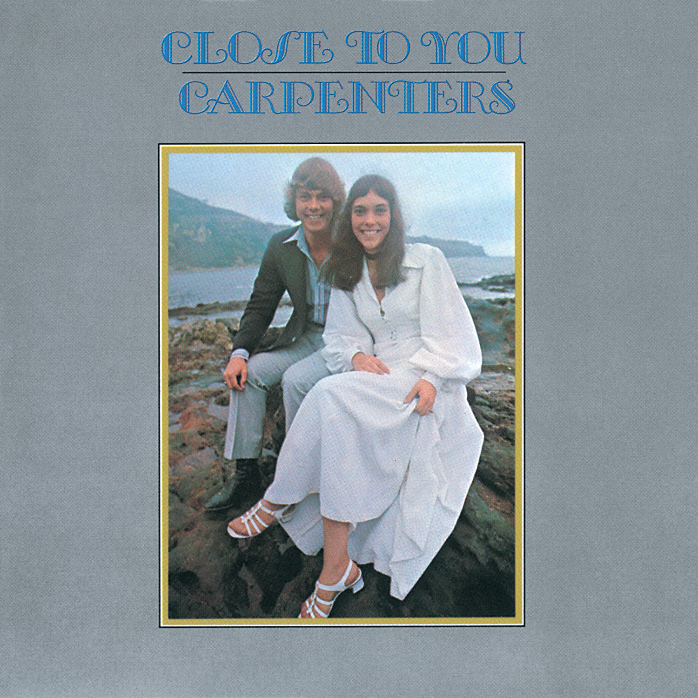

Every mood has a side.
Dreamy evenings, nostalgic afternoons, and something a little louder. Follow the feeling.
About SIDE A
For the music, the story, and the atmosphere. For people who still listen to albums, from the first track to the last.

More than a format
SIDE A is a simple vinyl collection store that curates albums based on the music, story, and atmosphere they offer.
We feature a range of genres including pop, jazz, rock, R&B, and bolero. Every album is chosen to fit relaxed moments and meaningful experiences.
Our goal is to help listeners discover records that match their mood and taste.
Meet the collectionDreamy evenings, nostalgic afternoons, and something a little louder. Follow the feeling.
The sleeve, the grooves, the turn of a side. A little more attention, from start to finish.
Put the needle down. Let the album play. Make room for the music you want to hear again.